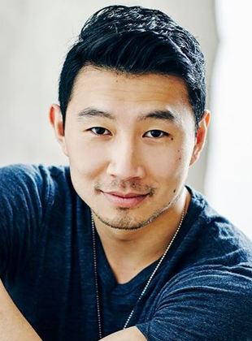
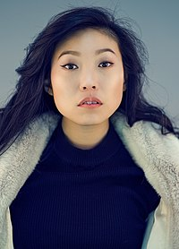
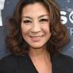
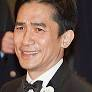
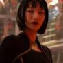
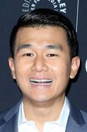
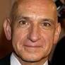

ELENCO

Ator
É um ator sino-canadense. É mais conhecido pelo papel de Jung na série Kim’s Convenience, da CBC Television, e pelo papel de Shang-Chi no filme Shang-Chi e a Lenda dos Dez Anéis, no Universo Cinematográfico Marvel.`
Nascimento: 19 de abril de 1989 (idade 33 anos), Harbin, China
Prêmios: People's Choice Award: Melhor Estrela em Filme de Ação,

Atriz
Nora Lum, mais conhecida pelo nome artístico Awkwafina, é uma atriz, compositora e rapper norte-americana de origem sino-coreana.
Nascimento: 2 de junho de 1988 (idade 34 anos), Stony Brook, Nova York, EUA
Nome completo: Nora Lum
Prêmios: Glamour Award for Gamechanging Creator.
Atriz
Stephanie Ann Hsu é uma atriz americana. Ela originou os papéis teatrais de Christine Canigula em Be More Chill e Karen em The SpongeBob Musical, atuando na Broadway em ambos. Na tela, ela teve um papel recorrente em The Marvelous.
Nascimento: 25 de novembro de 1990 (idade 31 anos), Los Angeles, Califórnia, EUA
Indicações: Prêmio do Sindicato dos Atores: Melhor Elenco de Série de Comédia.
Prêmios: Prêmio do Sindicato dos Atores: Melhor Elenco de Série de Comédia

Datin Michelle Yeoh Choo-Kheng Embaixador da boa vontade da PNUDv é uma atriz e bailarina malaia, mais conhecida por suas participações em filmes chineses de artes marciais.
Nascimento: 6 de agosto de 1962 (idade 59 anos), Ipo, Malásia
Cônjuge: Dickson Poon (de 1988 a 1991)
Parceiro: Jean Todt (desde 2004).
Próximos filmes: Avatar 2, Avatar 4, Minions 2: A Origem de Gru, Avatar 3, O Lendário Cão Guerreiro.
Irmãos: Lam Hoe Yeoh, Robert Yeoh

Tony Leung Chiu-wai é um ator e cantor chinês. Ele foi o vencedor do prêmio de melhor ator do Festival de Cannes por seu papel em Amor à Flor da Pele. Além desse, atuou em outros seis filmes de Wong Kar-Wai, incluindo Felizes Juntos e 2046.
Nascimento: 27 de junho de 1962 (idade 59 anos), Hong Kong Britânico.
Cônjuge: Carina Lau (desde 2008)

Meng'er Zhang é uma atriz chinesa. Ela é conhecida por interpretar Xu Xialing em Shang-Chi e a Lenda dos Dez Anéis, no Universo Cinematográfico Marvel.
Nascimento: 22 de abril de 1987 (idade 35 anos), Nanquim, China.
Altura: 1,66 m.
Cônjuge: Yung Lee (desde 2021)
Filmes: Shang-Chi e a Lenda dos Dez Anéis

Ronny Xin Yi Chieng é um comediante e ator malaio. Atualmente, Chieng é correspondente do The Daily Show e criador e protagonista da comédia Ronny Chieng: International Student, que estreou na ABC e na Comedy Central Asia em 2017.
Nascimento: 21 de novembro de 1985 (idade 36 anos), Johor Bahru, Malásia
Cônjuge: Hannah Pham (desde 2016)

Sir Ben Kingsley é um ator britânico de ascendência indiana e russo-judaica. Em 1983 foi premiado com o Globo de Ouro, o BAFTA e o Oscar de melhor ator pelo papel de Mahatma Gandhi no filme Gandhi.
Nascimento: 31 de dezembro de 1943 (idade 78 anos), Snainton, Reino Unido.
Altura: 1,73 m
Cônjuge: Daniela Lavender (desde 2007)
Filhos: Ferdinand Kingsley, Jasmin Bhanji, Edmund Kingsley, Thomas Alexis Bhanji.
Prêmios: Oscar de Melhor Ator,